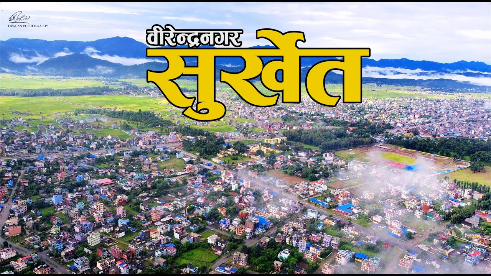
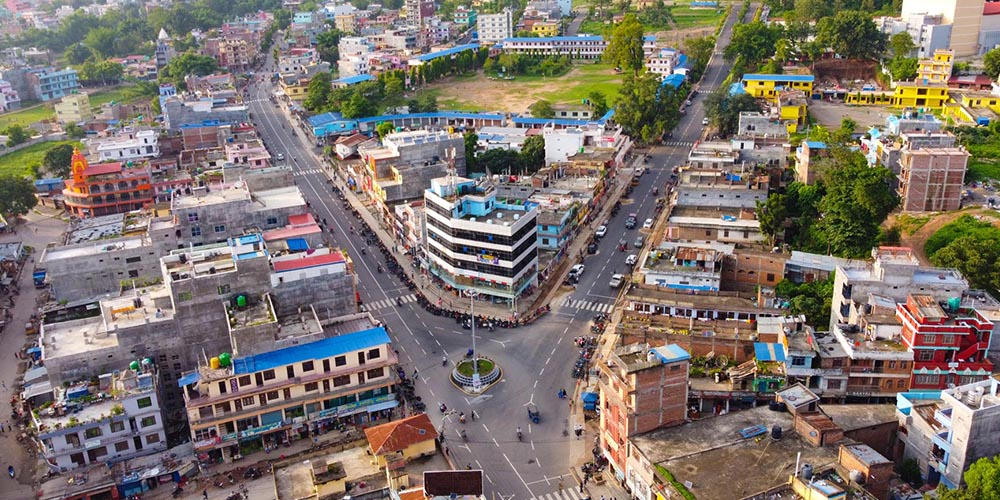
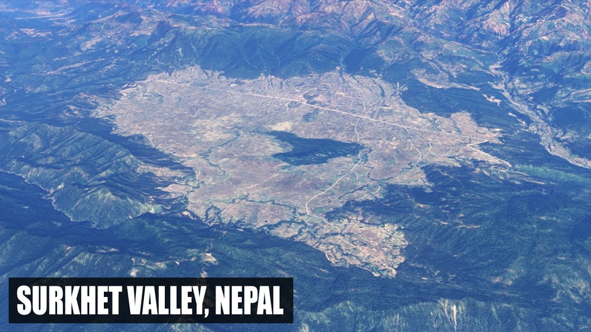

Explore the Heart of Karnali Province, Nepal
Birendranagar is the vibrant capital city of Karnali Province, Nepal. It is located in the Surkhet Valley, surrounded by lush hills and a rich landscape. The city offers a unique blend of nature, culture, and modernity, making it an important urban center in the western region of Nepal.
Birendranagar, named after the late King Birendra of Nepal, was once a small village but has grown rapidly over the years. With a mix of urban infrastructure and traditional Nepali lifestyle, it serves as the administrative and economic hub of Karnali Province. The city offers a mild subtropical climate and is known for its cultural diversity, with various ethnic communities coexisting in harmony.
Birendranagar is situated in the Surkhet Valley, which is one of the most fertile regions in Nepal. The valley is bordered by hills and forests, offering spectacular views and a variety of biodiversity. Its geographical location makes it an important trade and communication hub, connecting the remote areas of Karnali Province with the rest of Nepal. Historically, it has been a site for commerce, agriculture, and cultural exchange.
The city's development can be attributed to its strategic location as a gateway to the remote areas of the Karnali region. In addition, Birendranagar has been a focal point for educational institutions, government services, and infrastructure development, making it a key city for the western part of Nepal.
Bulbule Lake is one of Birendranagar’s most beautiful spots. Located in the heart of the city, the lake offers a peaceful environment, surrounded by greenery. It is an ideal place for visitors who wish to engage in activities like boating, bird watching, and relaxing in nature.
Kakrebihar Temple is an ancient site located in Birendranagar. This Buddhist temple, dating back to the 12th century, offers not only spiritual significance but also panoramic views of the surrounding valley. It is a must-visit for history enthusiasts and religious pilgrims alike.
Surkhet Model School is one of the most reputed educational institutions in Birendranagar. The school offers a modern curriculum combined with extracurricular activities to shape students into well-rounded individuals.
Amarjyoti Secondary School is renowned for its focus on academic excellence and extracurricular activities, providing students with a holistic education that prepares them for the future.
Janamavi Namuna School offers a diverse learning environment with an emphasis on both theoretical knowledge and practical skills, helping students excel in a variety of fields.
Morning Star School is dedicated to academic rigor and innovation, providing a nurturing environment for students to grow intellectually and socially.
Made by Biplav Budha Magar.